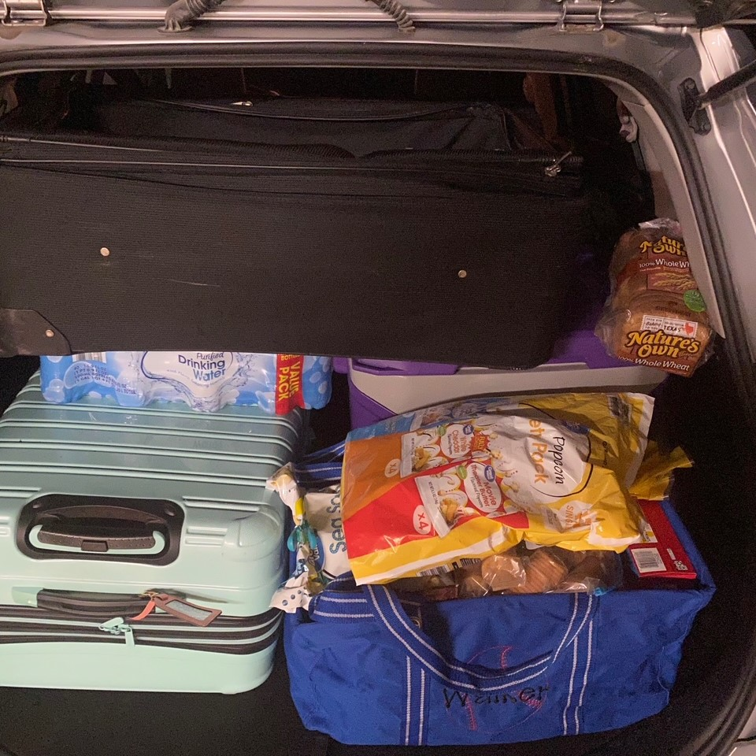
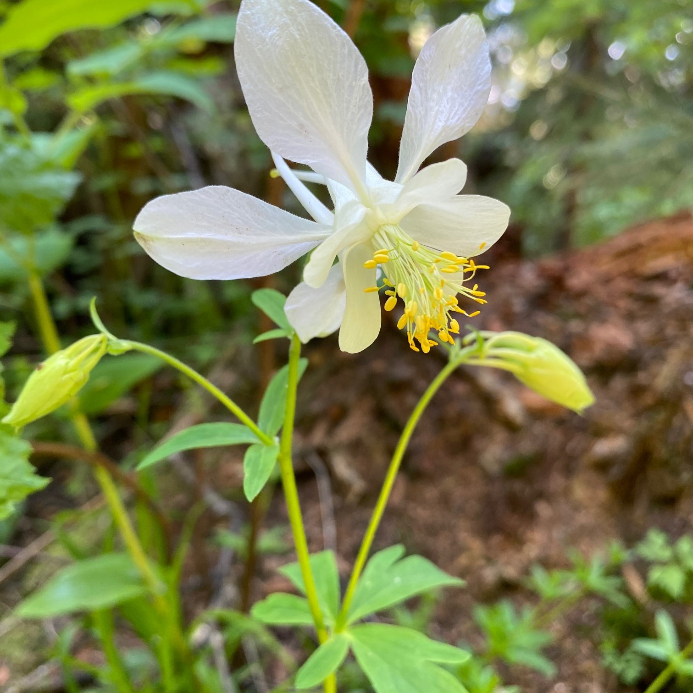
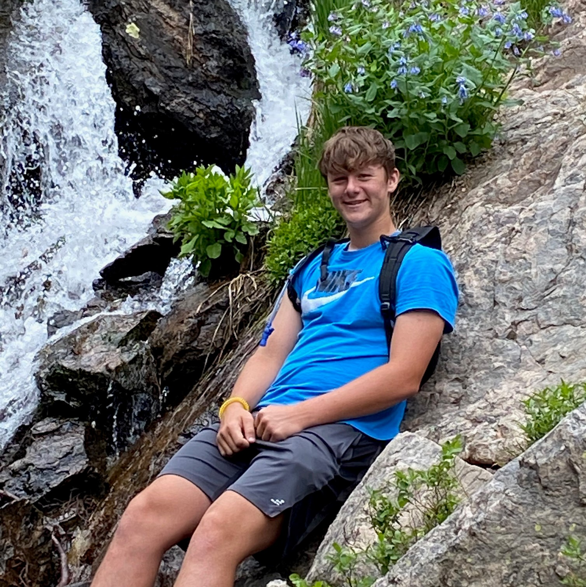

One of the best parts of visiting a national park is the solitude. Since parks tend to be remote it is important
bring your own supplies. It is also import to remember where everything goes. I recommend taking a picture to
help yourself remember.

Details
July 5, 2020 by John Walker
Many of the national parks in the western United States are vast. Indeed the magnitude of their
lakes and mountains is emense. Its easy to lose yourself in the "bigness" of it all. Make sure you don't
miss the small details like the variety of flowers.

Photo Op
July 15, 2021 by John Walker
There are currently sixty-three national parks in the United States. No doubt they all present many photo opportunities.
When looking for that perfect spot try to find a place that does not impede traffic on the trail and does not put you in
danger either.

The Other One
July 25, 2021 by John Walker
Most residents of Texas are familiar with Big Bend National Park which borders Mexico. But Texas also boast one other national
park which borders New Mexico, Guadalupe Mountains National Park; which lays claim to having the tallest peak in
Texas.